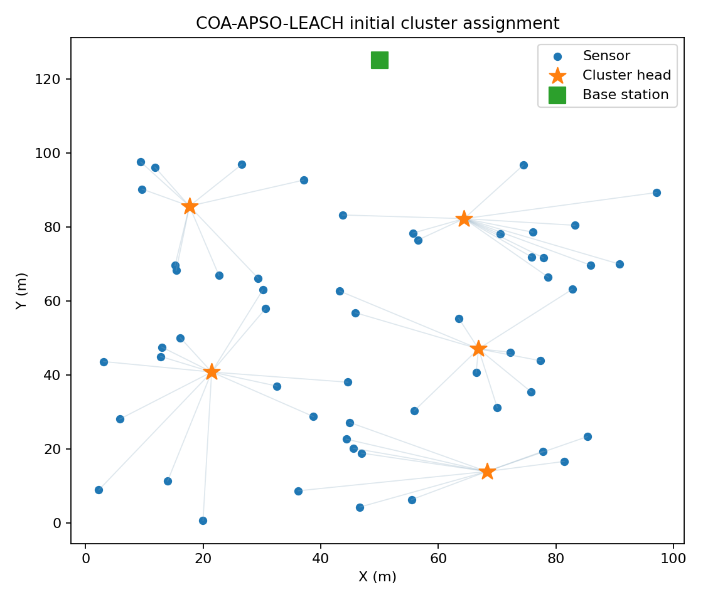
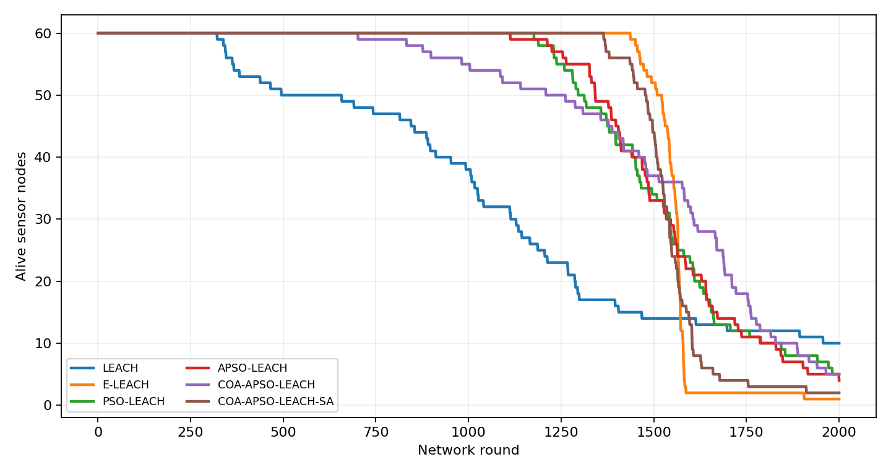
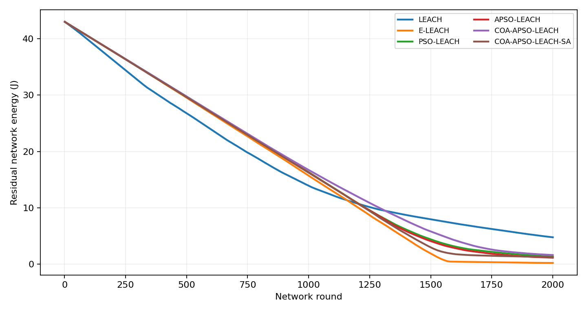
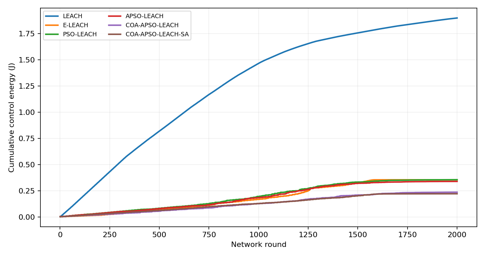
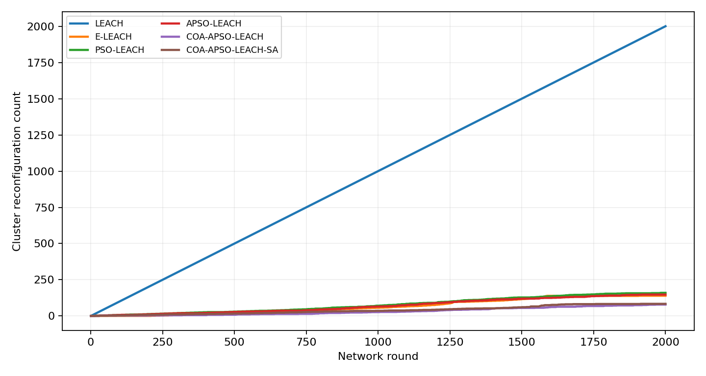
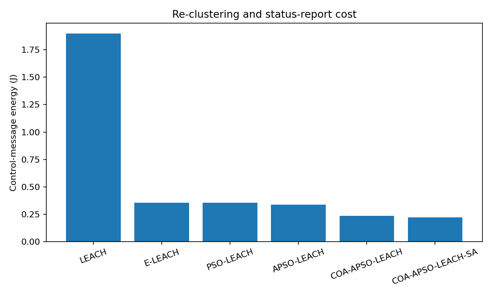

Model-based results, not Contiki Energest measurements. Network nodes: 60; rounds: 2000; seed: 42. An absent FND/HND/LND means the event did not occur in the configured horizon. APSO, PSO and COA use centrally computed optimization.
| protocol | fnd | hnd | lnd | final_alive | control_energy_j | reconfigurations | reconfigs_rejected |
|---|---|---|---|---|---|---|---|
| LEACH | 322 | 1114 | None | 10 | 1.8977778129481315 | 2000 | 0 |
| E-LEACH | 1437 | 1563 | None | 1 | 0.3542618798814764 | 140 | 0 |
| PSO-LEACH | 1177 | 1543 | None | 5 | 0.354866306449579 | 160 | 0 |
| APSO-LEACH | 1113 | 1534 | None | 4 | 0.33884430096840895 | 148 | 0 |
| COA-APSO-LEACH | 702 | 1606 | None | 5 | 0.23574892737364278 | 79 | 101 |
| COA-APSO-LEACH-SA | 1365 | 1537 | None | 2 | 0.2210782089371535 | 84 | 88 |






Improvement is a hypothesis, not guaranteed. Check whether the proposed protocol consumes less total energy and control energy while maintaining or extending FND/HND under matched inputs. The energy simulator uses first-order radio costs and ideal packet delivery. Cooja radio behavior is modeled separately.